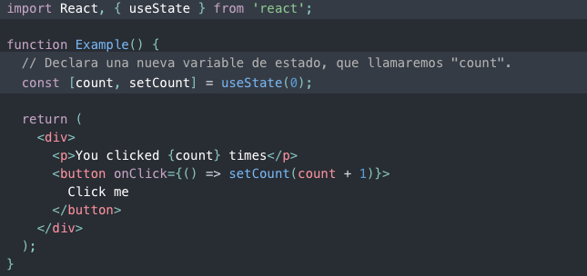
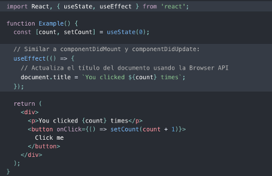

Funciones que dan superpoderes a tus componentes
useHook para manejar datos que cambian en el tiempo
import { useState } from 'react';
function Counter() {
// [valor, funcionParaCambiar] = useState(valorInicial)
const [count, setCount] = useState(0);
return (
<div>
<p>Contador: {count}</p>
<button onClick={() => setCount(count + 1)}>
+1
</button>
</div>
);
}function UserProfile() {
const [user, setUser] = useState({
name: '',
level: 1,
description: ''
});
const updateName = (e) => {
setUser({ ...user, name: e.target.value });
};
return <input value={user.name} onChange={updateName} />;
}function TodoList() {
const [items, setItems] = useState([]);
const addItem = (newItem) => {
setItems([...items, newItem]);
};
const removeItem = (id) => {
setItems(items.filter(item => item.id !== id));
};
return (
<ul>
{items.map(item => (
<li key={item.id}>{item.text}</li>
))}
</ul>
);
}function CreateUser() {
const [name, setName] = useState('');
const [level, setLevel] = useState(1);
const handleSubmit = async (e) => {
e.preventDefault();
await fetch('http://localhost:3001/usuario', {
method: 'POST',
headers: { 'Content-Type': 'application/json' },
body: JSON.stringify({
name, level, description: 'Nuevo'
})
});
setName('');
setLevel(1);
};
return (
<form onSubmit={handleSubmit}>
<input
value={name}
onChange={e => setName(e.target.value)}
placeholder="Nombre"
/>
<input
type="number" value={level}
onChange={e => setLevel(Number(e.target.value))}
/>
<button type="submit">Crear Usuario</button>
</form>
);
}
Hook para efectos secundarios (side effects)
Similar a middleware en Express: código que se ejecuta "al lado" de la lógica principal
import { useState, useEffect } from 'react';
function UserList() {
const [users, setUsers] = useState([]);
const [loading, setLoading] = useState(true);
useEffect(() => {
// Se ejecuta al montar el componente
fetch('http://localhost:3001/usuarios')
.then(res => res.json())
.then(data => {
setUsers(data);
setLoading(false);
});
}, []); // [] = solo al montar
if (loading) return <p>Cargando...</p>;
return (
<ul>
{users.map(user => (
<li key={user.id}>{user.name}</li>
))}
</ul>
);
}// Se ejecuta UNA vez al montar
useEffect(() => { /* ... */ }, []);
// Se ejecuta cuando userId cambia
useEffect(() => {
fetch(`http://localhost:3001/usuario/${userId}`)
.then(res => res.json())
.then(setUser);
}, [userId]);
// Se ejecuta en CADA render (evitar si posible)
useEffect(() => { /* ... */ });useEffect(() => {
const interval = setInterval(() => {
console.log('tick');
}, 1000);
// Cleanup: se ejecuta al desmontar
return () => clearInterval(interval);
}, []);Similar a cerrar una conexión de DB en Express al apagar el server
function UserList() {
const [users, setUsers] = useState([]);
const [loading, setLoading] = useState(true);
const [error, setError] = useState(null);
useEffect(() => {
fetch('http://localhost:3001/usuarios')
.then(res => {
if (!res.ok) throw new Error(`HTTP ${res.status}`);
return res.json();
})
.then(data => setUsers(data))
.catch(err => setError(err.message))
.finally(() => setLoading(false));
}, []);
if (loading) return <p>Cargando...</p>;
if (error) return <p>Error: {error}</p>;
return <ul>{users.map(u => <li key={u.id}>{u.name}</li>)}</ul>;
}
Hook para compartir datos entre componentes sin pasar props
App (tiene usuario)
└─ Layout (pasa usuario)
└─ Sidebar (pasa usuario)
└─ UserBadge (necesita usuario) 😩Pasar props por muchos niveles es tedioso
import { createContext, useContext, useState } from 'react';
const AuthContext = createContext(null);
function App() {
const [user, setUser] = useState(null);
return (
<AuthContext.Provider value={{ user, setUser }}>
<Layout />
</AuthContext.Provider>
);
}
function UserBadge() {
const { user } = useContext(AuthContext);
if (!user) return <p>No autenticado</p>;
return <p>Hola, {user.name}</p>;
}// Express: req.user disponible en cualquier ruta via middleware
app.use((req, res, next) => {
req.user = getUserFromToken(req.headers.auth);
next();
});
// React: useContext disponible en cualquier componente
const { user } = useContext(AuthContext);Hook para referencias que persisten entre renders
import { useRef } from 'react';
function SearchInput() {
const inputRef = useRef(null);
const handleClick = () => {
inputRef.current.focus();
};
return (
<div>
<input ref={inputRef} type="text" placeholder="Buscar..." />
<button onClick={handleClick}>Enfocar</button>
</div>
);
}function StopWatch() {
const [time, setTime] = useState(0);
const intervalRef = useRef(null);
const start = () => {
intervalRef.current = setInterval(() => {
setTime(t => t + 1);
}, 1000);
};
const stop = () => {
clearInterval(intervalRef.current);
};
return (
<div>
<p>Tiempo: {time}s</p>
<button onClick={start}>Iniciar</button>
<button onClick={stop}>Detener</button>
</div>
);
}Hook para estado complejo con múltiples acciones
import { useReducer } from 'react';
function reducer(state, action) {
switch (action.type) {
case 'increment':
return { count: state.count + 1 };
case 'decrement':
return { count: state.count - 1 };
case 'reset':
return { count: 0 };
default:
return state;
}
}
function Counter() {
const [state, dispatch] = useReducer(reducer, { count: 0 });
return (
<div>
<p>Contador: {state.count}</p>
<button onClick={() => dispatch({ type: 'increment' })}>+</button>
<button onClick={() => dispatch({ type: 'decrement' })}>-</button>
<button onClick={() => dispatch({ type: 'reset' })}>Reset</button>
</div>
);
}| useState | useReducer |
|---|---|
| Estado simple (string, number) | Estado complejo (objetos, arrays) |
| 1-2 formas de actualizar | Múltiples acciones posibles |
| Lógica simple | Lógica con muchos casos |
Hooks de optimización de rendimiento
import { useMemo, useState } from 'react';
function UserStats({ users }) {
const [filter, setFilter] = useState('');
// Solo recalcula cuando users cambia
const avgLevel = useMemo(() => {
console.log('Calculando promedio...');
return users.reduce((sum, u) => sum + u.level, 0) / users.length;
}, [users]);
return (
<div>
<p>Nivel promedio: {avgLevel}</p>
<input
value={filter}
onChange={e => setFilter(e.target.value)}
placeholder="Filtrar..."
/>
</div>
);
}import { useCallback, useState } from 'react';
function UserManager() {
const [users, setUsers] = useState([]);
// Función memorizada: no se re-crea en cada render
const deleteUser = useCallback(async (id) => {
await fetch(`http://localhost:3001/usuario/${id}`, {
method: 'DELETE'
});
setUsers(prev => prev.filter(u => u.id !== id));
}, []);
return (
<ul>
{users.map(user => (
<UserItem
key={user.id}
user={user}
onDelete={deleteUser}
/>
))}
</ul>
);
}Reutilizar lógica entre componentes
// hooks/useUsers.js
import { useState, useEffect } from 'react';
function useUsers() {
const [users, setUsers] = useState([]);
const [loading, setLoading] = useState(true);
const [error, setError] = useState(null);
const fetchUsers = () => {
setLoading(true);
fetch('http://localhost:3001/usuarios')
.then(res => res.json())
.then(data => setUsers(data))
.catch(err => setError(err.message))
.finally(() => setLoading(false));
};
useEffect(() => { fetchUsers(); }, []);
return { users, loading, error, refetch: fetchUsers };
}function App() {
const { users, loading, error, refetch } = useUsers();
if (loading) return <p>Cargando...</p>;
if (error) return <p>Error: {error}</p>;
return (
<div>
<button onClick={refetch}>Actualizar</button>
<ul>
{users.map(user => (
<li key={user.id}>
{user.name} - Nivel {user.level}
</li>
))}
</ul>
</div>
);
}// hooks/useFetch.js
function useFetch(url) {
const [data, setData] = useState(null);
const [loading, setLoading] = useState(true);
const [error, setError] = useState(null);
useEffect(() => {
fetch(url)
.then(res => {
if (!res.ok) throw new Error(`HTTP ${res.status}`);
return res.json();
})
.then(setData)
.catch(err => setError(err.message))
.finally(() => setLoading(false));
}, [url]);
return { data, loading, error };
}
// Uso
const { data: users, loading } = useFetch('http://localhost:3001/usuarios');
const { data: posts } = useFetch('http://localhost:3001/posts');use// ✅ CORRECTO
function UserList() {
const [users, setUsers] = useState([]);
useEffect(() => { /* ... */ }, []);
return <div>...</div>;
}
// ❌ INCORRECTO - hook dentro de condicional
function UserList({ loggedIn }) {
if (loggedIn) {
const [users, setUsers] = useState([]); // ERROR
}
return <div>...</div>;
}| Hook | Propósito |
|---|---|
useState |
Estado local del componente |
useEffect |
Efectos secundarios (fetch, timers) |
useContext |
Estado global compartido |
useRef |
Referencias al DOM, valores persistentes |
useReducer |
Estado complejo con acciones |
useMemo |
Cachear valores costosos |
useCallback |
Cachear funciones |